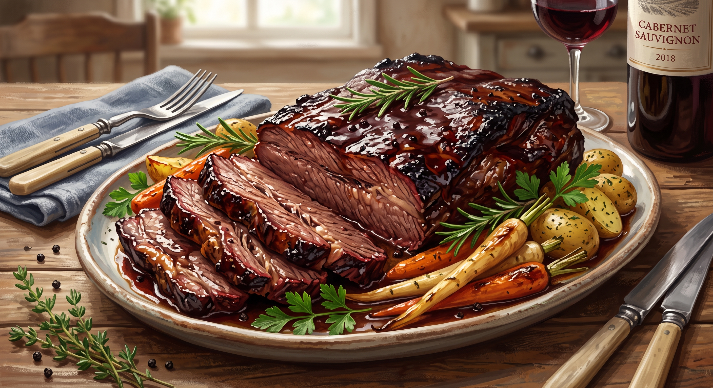

Wine-Braised Beef Brisket

Odin, the Allfather, famously lives on wine alone and feeds his meat to his
two wolves, Geri and Freki. But even a god who gave up an eye for wisdom
can't resist brisket slow-braised in red wine until it falls apart. It's the
one dish where he gets to enjoy his favorite drink and a hearty feast at the
same time.
Ingredients
- 1 teaspoon dried thyme
- 1 teaspoon salt
- ¼ teaspoon ground black pepper
- 1 (3 pound) beef brisket
- 1 tablespoon olive oil
- 1 red onion, sliced
- 1 (14.5 ounce) can beef broth
- 1 (8 ounce) can tomato sauce
- ½ cup red wine
Directions
- Preheat oven to 350 degrees F (175 degrees C).
- Mix thyme, salt, and black pepper in a small bowl and rub the mixture over both sides of brisket.
- Heat olive oil in a roasting pan over medium-high heat; place brisket in the hot oil and brown on both sides, 3 to 4 minutes per side. Remove brisket from pan and set aside.
- Place red onion slices into the hot roasting pan and cook and stir until onion is slightly softened, about 2 minutes. Stir in beef broth, tomato sauce, and wine.
- Place the brisket back into the roasting pan and cover pan with foil.
- Roast the brisket in the preheated oven for 1 hour; remove foil and baste brisket with pan juices. Place foil back over roasting pan and roast brisket until very tender and pan sauce has thickened, 1 1/2 to 2 more hours.
More info
Go back